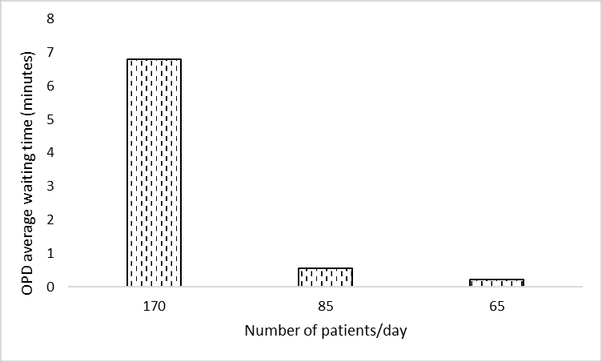
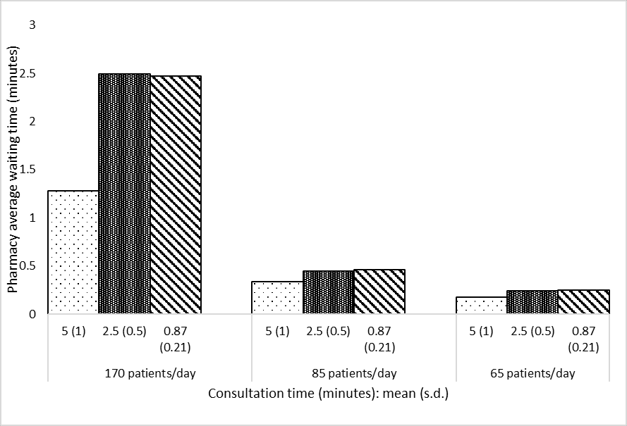
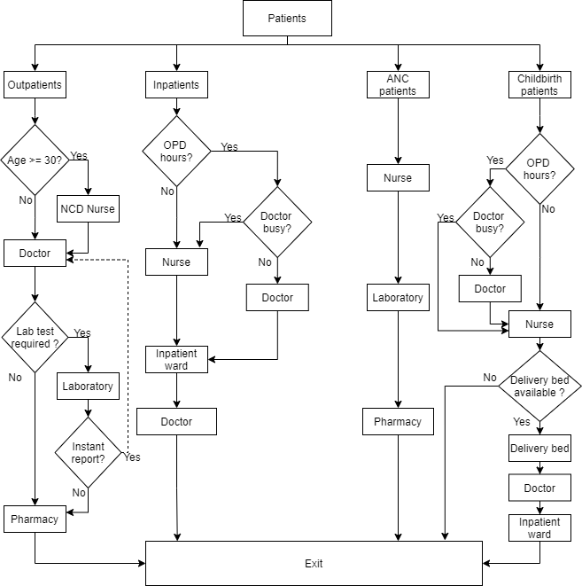
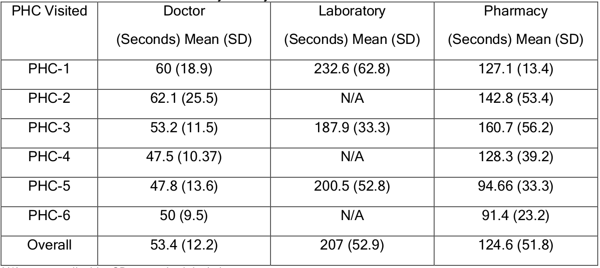

This page outlines that parts of the journal article which we will attempt to reproduce.
As cited throughout, images on this page are sourced from Shoaib and Ramamohan (2021), which is shared under CC BY-NC-ND.
Within scope
There are 17 items in the scope (1 table, 9 figures, and 7 in-text results).
Table 6
Table 6. “Operational outcomes for each PHC configuration simulation. * Number of doctors/OPD cases/IPD cases/childbirth/ANC (patients)/inpatient beds/labour room” Shoaib and Ramamohan (2021)
CSV version:
import pandas as pdtab6 = pd.read_csv('../original_study/tab6.csv')tab6
outcome
config1_mean
config1_sd
config2_mean
config2_sd
config3_mean
config3_sd
benchmark_mean
benchmark_sd
0
Doctor utilisation
0.268
0.003
0.372
0.004
0.354
0.002
1.142
0.006
1
NCD Nurse utilisation
0.865
0.011
0.469
0.005
0.468
0.005
1.232
0.019
2
Staff nurse utilisation
0.323
0.008
0.243
0.006
0.160
0.001
0.322
0.008
3
Pharmacist utilisation
0.643
0.004
0.288
0.003
0.289
0.003
0.855
0.005
4
Lab utilisation
0.559
0.008
0.254
0.004
0.239
0.004
0.736
0.011
5
Inpatient bed utilisation
0.093
0.004
0.055
0.003
0.011
0.001
0.093
0.004
6
Labour bed utilisation
0.283
0.010
0.153
0.009
NaN
NaN
0.281
0.012
7
Mean length of OPD queue (number of patients)
0.000
0.000
0.007
0.001
0.001
0.000
0.817
0.027
8
OPD queue waiting time (minutes)
0.009
0.004
0.171
0.032
0.034
0.001
6.789
0.268
9
Mean length of pharmacy queue (number of patie...
0.090
0.002
0.010
0.001
0.009
0.000
0.150
0.002
10
Pharmacy queue waiting time (minutes)
1.025
0.021
0.244
0.008
0.232
0.006
1.282
0.018
11
Mean length of Lab queue (number of patients)
0.094
0.003
0.012
0.001
0.011
0.000
0.188
0.001
12
Lab queue waiting time (minutes)
2.084
0.054
0.606
0.023
0.571
0.020
3.135
0.005
13
Fraction of childbirth cases referred
0.156
0.019
0.088
0.022
NaN
NaN
0.157
0.180
Figure 2a
Figure 2a. “Impact on doctor’s utilisation.” Shoaib and Ramamohan (2021)
Figure 2b
Figure 2b. “Impact on the NCD nurse’s utilisation.” Shoaib and Ramamohan (2021)
Figure 2c

Figure 2c. “Impact on the average waiting time (minutes) in the OPD”. Shoaib and Ramamohan (2021)
Figure 2d

Figure 2d. “Impact on the average waiting time (minutes) in the pharmacy”. Shoaib and Ramamohan (2021)
Figure 3a
Figure 3a. “Impact on the doctor’s utilisation. Two levels of outpatient consultation times (minutes) are used”. Shoaib and Ramamohan (2021)
Figure 3b
Figure 3b. “Impact on the staff nurse’s utilisation”. Shoaib and Ramamohan (2021)
Figure 3c
Figure 3c. “Impact on the inpatient bed’s utilisation”. Shoaib and Ramamohan (2021)
Figure 3d
Figure 3d. “Impact on the proportion of childbirth cases referred elsewhere”. Shoaib and Ramamohan (2021)
Figure 4
Figure 4. “Effect of including additional labour beds on proportion of childbirth patients referred elsewhere”. Shoaib and Ramamohan (2021)
In-text result 1
From section 4.3: “We also note that waiting times for outpatient-related resources (laboratory, OPD consultation, etc. - not depicted in Figures 3a – 3d) increase marginally because the associated resources are also required by inpatient/childbirth/ANC cases, which increase in number in the above scenarios”
Interpretation:
Run sensitivity analysis as in Figures 3a-d, but look at outcomes relating to laboratory and outpatient consulation
Result: marginal increase
In-text result 2
From section 4.3.1: “To address this, we experimented with letting the staff nurse (whose utilisation is approximately 32%) take over the administrative work. This led to a 12% drop in the utilisation level, which implied that the doctor’s utilisation still exceeded 100%. Implementing this measure resulted in increasing the staff nurse utilisation to nearly 40%.”
Interpretation:
Average patient load of 170 per day
Average consultation time of 5 min per patient
Change doctor to have no administrative work, and assign all to staff nurse
Results: doctor utilisation 103%
103% is because the next result is 1% below, and as there is a 12% drop from fig 2a, still over 100%, and nurse utilisation at 40%
In-text result 3
From section 4.3.1: “then considered a situation wherein the staff nurses require minimal intervention in childbirth cases. We assumed that in 50% of childbirth cases, staff nurses require no intervention by the doctor; require only one- third of the typical amount of intervention in 30% of cases, and require full intervention in the remaining 20% of cases. This led to a decrease of the doctor’s utilisation to 101% (a further decrease of approximately 1%), and an increase in the nurse’s utilisation to 40%.”
Interpretation:
Average patient load of 170 per day
Average consultation time of 5 min per patient
Change doctors from always attending childbirth cases when free to 50% not attending, 30% attending but for one-third of normal time, 20% attending for normal time
Result: Doctor utilisation 101% and nurse utilisation 40%
In-text result 4
From section 4.3.1: “investigated the effect of stationing an additional doctor in the PHC. This yielded an average utilisation of well below 100% for each doctor.”
Interpretation:
Average patient load of 170 per day
Average consultation time of 5 min per patient
Add a doctor
Result: each doctor has utilisation “well below 100%”
In-text result 5
From section 4.3.2: “We also observe that if the number of beds is reduced to four from six, the utilisation level is observed to be approximately thirty-three percent even under higher demand conditions (two inpatient and childbirth cases/day).”
Interpretation:
Reduce from six to four inpatient beds
Conditions un-specified (assume standard, and also high demand (2 inpatient and childbirth cases per day))
Result: Approximately 33% utilisation
In-text result 6
From section 4.3.3: “When the administrative work alone is assigned to the staff nurse the average utilisation of the NCD nurse decreases to 100%”
Interpretation:
Outpatient interarrival time 3 minutes
No administrative work for NCD nurse, only assigned to staff nurse
Result: NCD nurse utilisation 100%
In-text result 7
From section 4.3.3: “Further, in addition to the administrative work when the staff nurse assisted for NCD checks (for 10% cases) the utilisation of NCD nurse dropped to 71%.”
Interpretation:
Outpatient interarrival time 3 minutes
Potentially combined with change in administrative work
Assigned staff nurse for 10% of NCD cases
Result: NCD nurse utilisation 71%
Outside scope
These are tables and figures from the main body of the text which were considered to be outside the scope of this reproduction.
Figure 1

Figure 1. “Patient flow in the archetypal PHC”. Shoaib and Ramamohan (2021)
Table 1
Table 1. “Data summary of staffing level, patient load, and other facilities at PHCs”. Shoaib and Ramamohan (2021)
Table 2

Table 2. “Service time data summary for key PHC resources”. Shoaib and Ramamohan (2021)
Table 3
Table 3. “PHC configurations. 1: Note: the nurses work in shifts – that is, each nurse works alone in an eight-hour shift. NA = not applicable. All configurations have 6 inpatient beds and 1 childbirth room (with a single bed).” Shoaib and Ramamohan (2021)
Table 4
Table 4. “Facility independent input parameters”. Shoaib and Ramamohan (2021)
Table 5
Table 5. “Internal validation outcomes for doctor’s utilisation”. Shoaib and Ramamohan (2021)
References
Shoaib, Mohd, and Varun Ramamohan. 2021. “Simulation Modelling and Analysis of PrimaryHealthCentreOperations.”arXiv, June. https://doi.org/10.48550/arXiv.2104.12492.